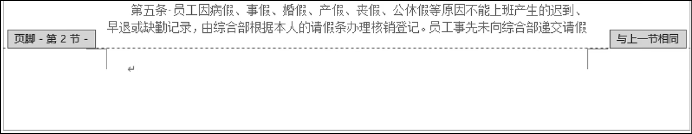

首页 > 编程笔记
Word设置页码（非常详细）
Word 页码通常位于页面的底部或顶部，是大型文档不可缺少的组成部分。
以页面结构而言，页码位于页面的页眉或页脚中，因此，适用于页眉和页脚的大多数操作也同样适用于页码。本文将介绍创建适合不同应用需求的页码的方法。
图1：选择为 Word 添加页码的位置
对不同选项的说明：
可以在添加页码前或添加页码后设置页码的数字格式，例如
在功能区的【插入】选项卡中单击【页码】按钮，然后在弹出的菜单中选择【设置页码格式】命令，打开【页码格式】对话框，在【编号格式】下拉列表中选择所需的页码格式，如图2所。
图2：设置页码格式
对页码编号的说明：
【案例演示】为员工考勤管理制度中的目录和正文设置不同格式的页码。
员工考勤管理制度由目录和正文两部分组成，目录位于员工考勤管理制度的开头，现在要将目录所在页面的页码设置为罗马数字，将正文所在页面的页码设置为阿拉伯数字。
图3：选择【下一页】命令
② Word 将在目录及其下方第一段之间插入一个分节符，并将目录之后的内容移到下一页，从而使目录在单独的一页中，如图4所示。
图4：在目录的结尾插入一个分节符
③ 双击正文第一页的页脚区域，进入页脚编辑状态，此时页脚的两侧显示“页脚-第2节-”和“与上一节相同”，如图5所示。
④ 在功能区的【设计】选项卡中单击【链接到前一节】按钮，使该按钮弹起，如图6所示。此时页脚中的“与上一节相同”文字自动消失，表示当前节中的页脚与上一节断开，如图7所示。
图6：单击【链接到前一节】按钮

图7：当前节的页脚与上一节断开
⑤ 在正文部分的页脚中插入阿拉伯数字的页码，在目录部分的页脚中插入罗马数字的页码，然后按 Esc 键，退出页脚编辑状态。这样就为目录和正文添加了两种格式的页码。
图8：设置正文部分的起始页码
实现此效果的方法是：
例如，如需在 Word 文档中的第 6 页开始显示页码，则需要在第 5 页或第 6 页插入分节符，并进行相关设置。
以页面结构而言，页码位于页面的页眉或页脚中，因此，适用于页眉和页脚的大多数操作也同样适用于页码。本文将介绍创建适合不同应用需求的页码的方法。
Word 添加页码
如需添加页码，可以在功能区的【插入】选项卡中单击【页码】按钮，然后在弹出的菜单中选择添加页码的位置，如图1所示。图1：选择为 Word 添加页码的位置
对不同选项的说明：
- 页面顶端：在页眉中插入页码。选择【页面顶端】命令，然后在弹出的列表中选择预置的页码样式。
- 页面底端：在页脚中插入页码。选择【页面底端】命令，然后在弹出的列表中选择预置的页码样式。
- 页边距：在页面的左或右页边距中插入页码。选择【页边距】命令，然后在弹出的列表中选择预置的页码样式。
- 当前位置：在插入点当前所在的位置插入页码。选择【当前位置】命令，然后在弹出的列表中选择预置的页码样式。
可以在添加页码前或添加页码后设置页码的数字格式，例如
-2-或者II等。在功能区的【插入】选项卡中单击【页码】按钮，然后在弹出的菜单中选择【设置页码格式】命令，打开【页码格式】对话框，在【编号格式】下拉列表中选择所需的页码格式，如图2所。
图2：设置页码格式
对页码编号的说明：
- 如果在文档中设置了分节，则可以选中【续前节】单选按钮，使当前页码紧接着上一节页码续排。
- 如需将页码从 1 或指定数字开始编排，则可以选中【起始页码】单选按钮，然后在右侧的文本框中输入所需的数字。
为Word文档设置多种格式的页码
对于一个大型文档而言，通常需要为文档中的不同部分设置不同格式的页码。为了在一个文档中设置多种格式的页码，需要在文档中的各个部分之间插入分节符，并断开节与节之间的关联，然后为各节设置所需的页码。【案例演示】为员工考勤管理制度中的目录和正文设置不同格式的页码。
员工考勤管理制度由目录和正文两部分组成，目录位于员工考勤管理制度的开头，现在要将目录所在页面的页码设置为罗马数字，将正文所在页面的页码设置为阿拉伯数字。
实现步骤
① 将插入点定位到目录下方第一段文字的开头，然后在功能区的【布局】选项卡中单击【分隔符】按钮，在弹出的列表中选择【分节符】类别中的【下一页】命令，如图3所示。图3：选择【下一页】命令
② Word 将在目录及其下方第一段之间插入一个分节符，并将目录之后的内容移到下一页，从而使目录在单独的一页中，如图4所示。
图4：在目录的结尾插入一个分节符
③ 双击正文第一页的页脚区域，进入页脚编辑状态，此时页脚的两侧显示“页脚-第2节-”和“与上一节相同”，如图5所示。

图5：进入正文第一页的页脚编辑状态
图5：进入正文第一页的页脚编辑状态
④ 在功能区的【设计】选项卡中单击【链接到前一节】按钮，使该按钮弹起，如图6所示。此时页脚中的“与上一节相同”文字自动消失，表示当前节中的页脚与上一节断开，如图7所示。
图6：单击【链接到前一节】按钮
图7：当前节的页脚与上一节断开
⑤ 在正文部分的页脚中插入阿拉伯数字的页码，在目录部分的页脚中插入罗马数字的页码，然后按 Esc 键，退出页脚编辑状态。这样就为目录和正文添加了两种格式的页码。
温馨提示
为了使正文部分第一页的页码从1开始，需要打开【页码格式】对话框，然后选中【起始页码】单选按钮，并在其右侧的文本框中输入“1”，如图8所示。图8：设置正文部分的起始页码
从指定的页面开始显示页码
有时可能需要从指定的页面开始显示页码，此页之前不显示页码。实现此效果的方法是：
- 首先在作为第一个显示页码的页面或其前一个页面中插入一个分节符，并断开两节之间的关联；
- 然后在分节后的第二个部分插入页码，并删除第一个部分中的页码。
例如，如需在 Word 文档中的第 6 页开始显示页码，则需要在第 5 页或第 6 页插入分节符，并进行相关设置。
关注公众号「站长严长生」，在手机上阅读所有教程，随时随地都能学习。内含一款搜索神器，免费下载全网书籍和视频。

微信扫码关注公众号